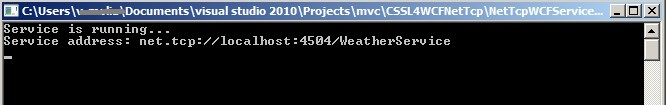

Silverlight4 support netTcp transport binding element, which gives us a new choice to implement duplex WCF. In this sample, we create a simple weather report subscription application to demonstrate how to consume netTcp WCF in Silverlight.
Silverlight 4 Tools for Visual Studio 2010
http://www.microsoft.com/downloads/details.aspx?FamilyID=eff8a0da-0a4d-48e8-8366-6ddf2ecad801&displaylang=en
Silverilght 4 runtime
http://silverlight.net/getstarted/
Internet Information Services (IIS)
http://www.iis.net/
To demonstrate silverlight accessing WCF, we may need a WCF service and a Silverlight WCF client. Here we separate the creation progress into three tasks:
1. Create a new console project, add a new WCF Service to project, named WeatherService.
2. Open IWeatherService.cs, define the service contract like this:
namespace NetTcpWCFService
{
[ServiceContract(CallbackContract=typeof(IWeatherServiceCallback))]
public interface
IWeatherService
{
[OperationContract(IsOneWay =
true)]
void Subscribe();
[OperationContract(IsOneWay = true)]
void UnSubscribe();
}
public interface
IWeatherServiceCallback
{
[OperationContract(IsOneWay=true)]
void WeatherReport(string
report);
}
}
3. Open WeatherService.cs. We use static event approach to implement subscription service. Please remember to set service InstanceContextMode to PerSession.
[ServiceBehavior(InstanceContextMode=InstanceContextMode.PerSession)]
public class
WeatherService :
IWeatherService
{
static event
EventHandler<WeatherEventArgs>
WeatherReporting;
IWeatherServiceCallback _callback;
public void
Subscribe()
{
_callback = OperationContext.Current.GetCallbackChannel<IWeatherServiceCallback>();
WeatherReporting += new
EventHandler<WeatherEventArgs>(WeatherService_WeatherReporting);
}
public void
UnSubscribe()
{
WeatherReporting -= new
EventHandler<WeatherEventArgs>(WeatherService_WeatherReporting);
}
void WeatherService_WeatherReporting(object
sender, WeatherEventArgs e)
{
// Remember check the callback channel's status
before using it.
if (((ICommunicationObject)_callback).State
== CommunicationState.Opened)
_callback.WeatherReport(e.WeatherReport);
else
UnSubscribe();
}
}
class
WeatherEventArgs:EventArgs
{
public string
WeatherReport{set;get;}
}
4. Create a separate thread to generate fake weather report periodically.
static WeatherService()
{
ThreadPool.QueueUserWorkItem(
new
WaitCallback(delegate
{
string[] weatherArray = {
"Sunny", "Windy",
"Snow", "Rainy"
};
Random rand =
new Random();
while (true)
{
Thread.Sleep(1000);
if (WeatherReporting != null)
WeatherReporting(
null,
new
WeatherEventArgs
{
WeatherReport =
weatherArray[rand.Next(weatherArray.Length)]
});
}
}));
}
5. Configure the app.config file to add netTcpbinding endpoint to WCF service.
<system.serviceModel>
<behaviors>
<serviceBehaviors>
<behavior
name="NetTcpWCFService.WeatherServiceBehavior">
<serviceMetadata
/>
<serviceDebug
includeExceptionDetailInFaults="false"
/>
</behavior>
</serviceBehaviors>
</behaviors>
<services>
<service
behaviorConfiguration="NetTcpWCFService.WeatherServiceBehavior"
name="NetTcpWCFService.WeatherService">
<endpoint
address=""
binding="netTcpBinding"
bindingConfiguration="b1"
contract="NetTcpWCFService.IWeatherService"
/>
<endpoint
address="mex"
binding="mexTcpBinding"
contract="IMetadataExchange"
/>
<host>
<baseAddresses>
<add
baseAddress="net.tcp://localhost:4504/WeatherService"
/>
</baseAddresses>
</host>
</service>
</services>
<bindings>
<netTcpBinding>
<binding
name="b1">
<security
mode="None"/>
</binding>
</netTcpBinding>
</bindings>
</system.serviceModel>
Note that, only a few ports are allowed to be accessed by Silverlight, that is 4502-4534, and we need client access policy file to permit Silverlight access, please refer to Deploying cross domain policy file
6. Start the ServiceHost in Main method
static void
Main(string[] args)
{
using (var
host = new
ServiceHost(typeof(WeatherService)))
{
host.Open();
Console.WriteLine("Service
is running...");
Console.WriteLine("Service
address: "+host.BaseAddresses[0]);
Console.Read();
}
}
Now, create Silverlight application to consume the WCF. We need one button to subscribe/unsubscribe servicie, and one listbox to display the weather report from service.
1. Create a new Silverlight project.
2. Open MainPage.xaml, Add Button, TextBlock and ListBox to MainPage and adjust layout.
<Grid
x:Name="LayoutRoot"
Background="White">
<Grid.RowDefinitions>
<RowDefinition Height="46*" />
<RowDefinition
Height="26*"
/>
<RowDefinition Height="228*" />
</Grid.RowDefinitions>
<TextBlock Text="Silverlight NetTcp Sample"
Grid.Row="0"
Margin="0,0,0,10"
FontSize="24"/>
<StackPanel Orientation="Horizontal"
Grid.Row="1">
<Button Content="Subscribe weather report"
Name="btnSubscribe"
Click="Button_Click"/>
<TextBlock VerticalAlignment="Center"
FontStyle="Italic"
Foreground="Red"
Margin="5,0,0,0"
Name="tbInfo"/>
</StackPanel>
<ListBox Name="lbWeather"
Grid.Row="2"
Margin="0,5,0,0"/>
</Grid>
3. Add Service Reference to our “weatherService” WCF service. To do this: First, set NetTcpWCFService project as startup project, press Ctrl+F5 to start the service. Then, right click Silverlight project, select “Add Service Reference”, in dialog, input the weather service address, and press OK. After done this, VS would generate wcf proxy code in Silverlight project.
4. Open MainPage.cs file, Initialize the WCF proxy in Loaded event
public
partial class
MainPage :
UserControl,IWeatherServiceCallback
{
public MainPage()
{
InitializeComponent();
Loaded += new
RoutedEventHandler(MainPage_Loaded);
}
bool _subscribed;
WeatherServiceClient _client;
void
MainPage_Loaded(object sender,
RoutedEventArgs e)
{
_client = new
WeatherServiceClient(
new System.ServiceModel.InstanceContext(this));
_client.SubscribeCompleted += _client_SubscribeCompleted;
_client.UnSubscribeCompleted
+= _client_UnSubscribeCompleted;
}
void _client_UnSubscribeCompleted(object
sender, System.ComponentModel.AsyncCompletedEventArgs
e)
{
if (e.Error ==
null)
{
_subscribed = false;
btnSubscribe.Content = "Subscribe weather
report";
tbInfo.Text = "";
}else
tbInfo.Text = "Unable to connect to
service.";
btnSubscribe.IsEnabled = true;
}
void _client_SubscribeCompleted(object
sender, System.ComponentModel.AsyncCompletedEventArgs
e)
{
if (e.Error ==
null)
{
_subscribed = true;
btnSubscribe.Content = "UnSubscribe weather
report";
tbInfo.Text = "";
}
else
tbInfo.Text="Unable to connect to service.";
btnSubscribe.IsEnabled = true;
}
// Display report when callback channel get
called.
public void
WeatherReport(string report)
{
lbWeather.Items.Insert(
0,
new
ListBoxItem
{
Content = string.Format("{0}
{1}",DateTime.Now, report)
});
}
}
5. Add event handler to handle button click event
private void
Button_Click(object sender,
RoutedEventArgs e)
{
if (!_subscribed)
{
_client.SubscribeAsync();
}
else
{
_client.UnSubscribeAsync();
}
btnSubscribe.IsEnabled = false;
}
Now, the Silverlight WCF Client is completed. We have one last task to permit the Silverlight access.
1. Create a xml file, named "clientaccesspolicy.xml", set content as below
<access-policy>
<cross-domain-access>
<policy>
<allow-from>
<domain
uri="*"/>
</allow-from>
<grant-to>
<socket-resource
port="4502-4506"
protocol="tcp"
/>
</grant-to>
</policy>
</cross-domain-access>
</access-policy>
This file grant permissions to allow Silverlight clients from any domian to access server's 4502-4506 port
2. Find out the server web site's root physical path (by default, C:\inetpub\wwwroot), place the policy file in that folder. To verify the deployment, browse http://localhost/clientaccesspolicy.xml, check if you could see the policy xml content.
To test the project
1. Open CSSL4WCFNetTcp solution, build.
2. Follow Creation step "Deploying cross domain policy file" to config your IIS, make sure that you can get cross-domain xml by visiting http://localhost/clientaccesspolicy.xml in your browser, if the wcf server is on the other computer, then try http://[wcf-server-computer-name]/clientaccesspolicy.xml
3. Start the duplex WCF. Run NetTcpWCFService.exe, it's under CSSL4WCFNetTcp\Debug folder.

4. Right click "CSSL4WCFNetTcpTestPage.aspx" in VS, Select "View in Browser".
5. When Silverlight application loaded, click "subscribe" button, if all code and configuration are correct, you may find the listbox displaying a new record in each second.

Building and Accessing Duplex Services
http://msdn.microsoft.com/en-us/library/cc645026(VS.95).aspx
Network Security Access Restrictions in Silverlight
http://msdn.microsoft.com/en-us/library/cc645026(VS.95).aspx